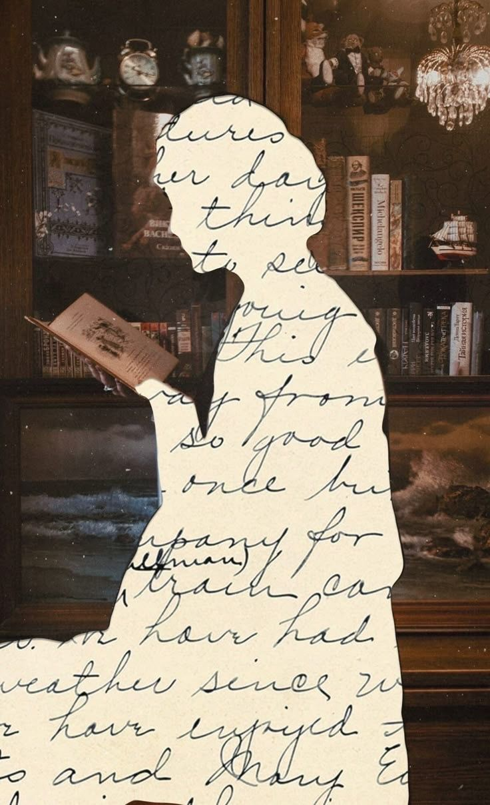

Une vie faite de passion, de création et d'un amour inconditionnel. Fondatrice, mère adorée et étoile éternelle pour tous ceux qui l'ont connue.

Mesmyne, connue de tous, aura été notre trésor. Un être d'exception dont la lumière aura illuminé chaque vie croisée sur son chemin. Sa présence était une évidence, une évidence joyeuse et généreuse.
Sa venue au monde, comme un poisson d'avril, le 1er avril 1972 à Douala, pourrait à elle seule la résumer, tant elle était singulière et unique. Ce jour-là, le Cameroun accueillait une âme qui ne ressemblerait à aucune autre — une métisse au cœur battant aux rythmes de plusieurs cultures, déjà destinée à voyager et à rayonner au-delà des frontières.
Première enfant de ses parents, Mesmyne était l'aînée tant aimée et admirée d'Annie, Guillaine et Japhet Junior. Son rôle de grande sœur fut celui d'une guide, d'une protectrice et d'une amie. Bien des années plus tard, elle devint la maman adorée de Bryan et Bryner, ses plus beaux accomplissements, les deux piliers qui ont donné un sens nouveau à sa vie. Être mère était pour elle une vocation sacrée, un honneur qu'elle portait avec grâce et dévotion.
Parler de Mesmyne revient à la situer dans les différents endroits du monde où sa vie et son cœur l'auront conduite : Paris, Rennes, New York, Londres… Autant de villes qui ont façonné sa vision du monde, nourri son regard et enrichi sa personnalité. Néanmoins, Douala sera restée, indubitablement, sa maison de cœur, le port d'attache où elle puisait sa force et ses racines.
Passionnée de décoration d'intérieur, Mesmyne a su transformer sa créativité et son goût pour le beau en une vocation et un véritable art de vivre. Femme entreprenante et travailleuse, elle fut notamment la fondatrice d'enseignes reconnues telles que Dorchester et La Conciergerie, des lieux qui portaient sa signature et son élégance. Son œil aiguisé, son sens du détail et son exigence faisaient d'elle une référence dans le milieu de la décoration et du design au Cameroun.
Au-delà de son parcours professionnel, Mesmyne restera surtout dans les cœurs pour sa joie de vivre et sa générosité. Elle avait ce don rare de mettre les autres à l'aise, d'écouter sans juger et de donner sans compter. Sa foi profonde était son roc, sa prière constante un fil d'or tissé dans chaque journée de son existence. Aujourd'hui, l'unique Métisse Bandjounaise est de retour à la maison et va vers son Père, qu'elle a tant prié. Sa mission sur terre est accomplie, mais son héritage demeure, vivant, dans le cœur de tous ceux qui ont eu la chance de la connaître.
Au-delà de son rôle de mère et de femme d'affaires, Mesmyne était une bâtisseuse. Dorchester porte son empreinte : une élégance discrète et une qualité irréprochable.
Son œuvre la plus belle demeure dans le cœur de ses enfants et de tous ceux qui l'ont connue. Mesmyne continue d'inspirer, de guider et de veiller sur nous depuis cette lumière éternelle où elle repose désormais.